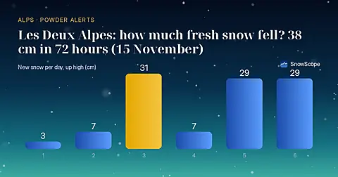
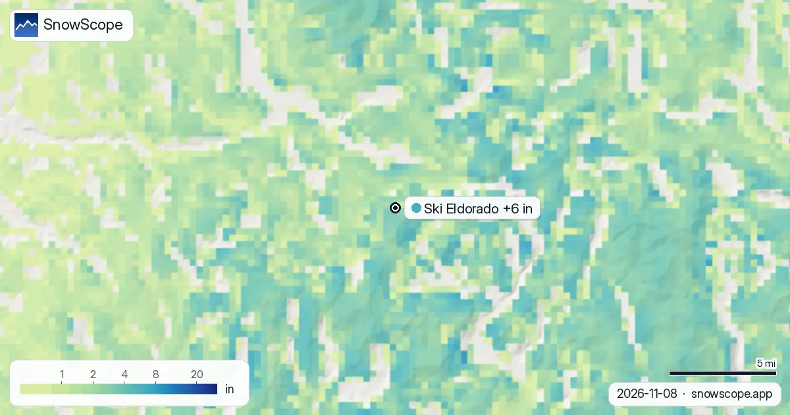
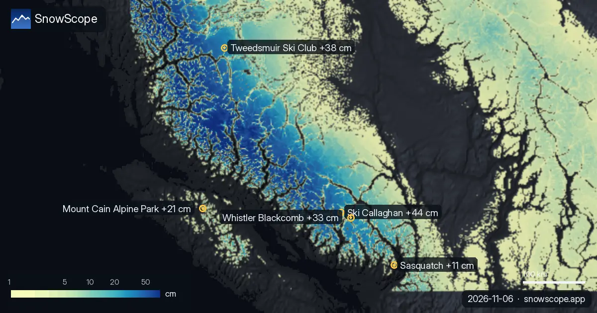
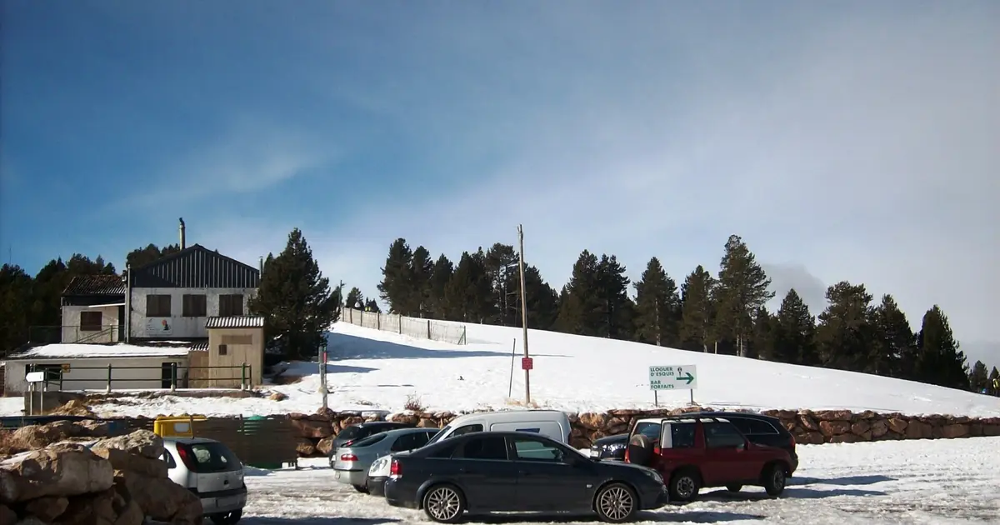

Snow reports · Avalanche safety
Daily snow reports for skiers: where the snow is, what is coming and where to ski, from the SnowScope snow map and measuring stations. Every number comes from that day's data.


Whistler Blackcomb saw 76 cm of new snow in the last 72 hours, with Mount Cain Alpine Park also receiving 64 cm, as of November 16, 2026.

Despite 60 cm of fresh snow in 72 hours, Scandinavia's mid-November depths are well below average as of 16 November.

The snow has pulled back since 13 November, from 6,880 sq mi (17,820 km²) to 6,039 sq mi (15,640 km²) today; for 18 November our forecast gives …

Snow-covered area: 258,160 km² on 13 November, 253,880 km² today, 298,900 km² forecast for 18 November. The map is getting less white. Three inputs, …

Pyrenees snow report, 15 November. Mixed rain and snow: snow is expected only up high, about 7–19 cm near the top of Cauterets Cirque du Lys …

Rain forecast as freezing level climbs to 4080 m; snow measured on 15 November is thin (under 20 cm) at all major Pyrenees resorts.

Picking a resort in the US Northeast comes down to three things: how deep the snow is, how fresh it is, and what is still to come. We weighed the …

Les Deux Alpes: how much fresh snow fell? 38 cm in 72 hours (15 November). Where did the most fresh snow fall in the Alps? La Grave got 41 cm of new …

Manning Park Resort has 22 percent of normal snow on 2026-11-15, with best historical snow arriving in weeks 12-14, still months away.

The white area on the map went from 910 km² (12 November) to 1,100 km² today, and the forecast says 640 km² on 17 November. Mixed rain and snow: snow …

Read the snow in the Pyrenees today and you get fresh powder, thin early-season snow and warm air that can leave a crust. So here is the kit list, …

Les Deux Alpes: 38–42 cm of fresh snow in 72 hours (Alps, 14 November). La Grave got 53 cm of new snow in the last 72 hours, 7 cm of it in the last …

Mt. Shasta Ski Park's upper slopes hold 20 cm (2026-11-13), but the base is bare with rain below 2020 m. Next: 32 cm forecast.

Stratton has 5 in (12 cm) on 2026-11-13 after 72 hours of snow. 28 Northeast resorts now have cover. Small amounts continue; best powder weeks arrive much later.

Telluride has 39 inches today. Peak snow weeks historically arrive in late December and March, not November.

Model plus forecast in the Alps today gives fresh powder. What to wear, what to pack and when to ski, resort by resort. Packing advice comes with …

Our picks are La Grave, Pfelders and Les Deux Alpes: we looked at today's snow depth, the new snow of the last 72 hours and the forecast. Of the …

La Grave leads the Alps with 78 centimetres and 61 centimetres of fresh snow in 72 hours, as 33 centimetres more is forecast.

Telluride's mid-slopes show 9 in (24 cm), running 92 percent of the seasonal average for mid-November. Saturday's system adds 5 in (13 cm) mostly above 10,000 ft.

Mount Cain Alpine Park fresh snow compared with the region: 15 cm in 72 hours (12 November). The snow cover shrank from 281,250 km² on 10 November to …

Piau-Engaly on 12 November: freezing level at 3060 m brings rain risk despite 16 cm of fresh snow in 72 hours.

Snow-covered area: 45,820 km² on 9 November, 38,440 km² today, 46,730 km² forecast for 14 November. The map is getting less white. Glacier 3000: …

Dent de Vaulion's upper slopes face rain as freezing level reaches 2800 m Thursday; higher resorts get fresh snow for the weekend.

From our snow model and forecast, today in the Pyrenees brings thin early-season snow and warm air that can leave a crust. Below, resort by resort: …

Where should you go skiing in the US West? Three inputs, one shortlist: today's snow depth, the new snow of the last 72 hours and the forecast point …

Freezing level climbs to 1870 m on November 13, bringing rain above Tweedsmuir's 1650 m peak. Fresh powder arrived overnight. Data from November 11.

Manning Park Resort snow is at 23% of normal for mid-November. Here's what to bring for thin cover and the changing conditions ahead.

Picking a resort in Western Canada comes down to three things: how deep the snow is, how fresh it is, and what is still to come. We weighed the snow …


Bonneval-sur-Arc shows 52 cm upper slopes on 8 November. Weeks 10-11 are peak snow months. See what to pack for the forecast.

More ground is white now: 0 sq mi (0 km²) on 6 November, 788 sq mi (2,040 km²) today, and 104 sq mi (270 km²) expected on 11 November. Ski Eldorado …

50 cm on the upper slopes: that is why La Grave heads our list. We combined today's snow depth, the new snow of the last 72 hours and the forecast to …

Whistler Blackcomb received 100 cm of fresh snow in 72 hours to 8 November, but it fell unevenly: 96 cm at the summit, none at the base.

About 192 mm of water on Whistler's upper slopes from 7 to 12 November: the 0 °C level swings between 1,410 and 2,920 m, snow up high, rain below.

Mt Baker's mid-slopes match the historical snow depth for this date, with fresh powder concentrated in the northern Cascades and Colorado high country.

Fresh powder arrives across Western Canada; Whistler leads at 85 cm with 100+ cm forecast ahead, though peak weeks are 12-14 (late March-April).

Artesina got 44 cm of new snow in the last 72 hours. It now has about 20 cm on its upper slopes, according to our snow model.

Freezing level forecast to 2140 m on 7 November brings rain to upper slopes at Ski Callaghan in Western Canada, despite fresh powder this week.

Mt Baker got 11 in (27 cm) of new snow in the last 72 hours, 4 in (11 cm) of it in the last 24 hours. It now has about 19 in (47 cm) on its upper …

We combined today's snow depth, the new snow of the last 72 hours and the forecast to pick Isola 2000, Artesina and Bonneval-sur-Arc. Of these …

Freezing level reaches 3620 m on Sunday 8 November, above Aramón Cerler's 2618 m top, bringing rain-on-snow risk (forecast from 6 November data).

Isola 2000 got 62 cm of new snow in the last 72 hours, 7 cm of it in the last 24 hours. It now has about 19 cm on its upper slopes, according to our …

58 centimetres of fresh snow fell across the southern Alps in 72 hours; best powder weeks peak in February, data from 5 November.

Artesina holds the deepest snow in the Alps this weekend with 22 cm upper slopes. Week 10 sees the best conditions historically. Data from 5 November.

Rasos de Peguera got 15 cm of new snow in the last 72 hours. It now has about 20 cm on its upper slopes, according to our snow model.

We combined today's snow depth, the new snow of the last 72 hours and the forecast to pick Rasos de Peguera, Aramón Cerler and Masella. Of these …

Kendall Mountain now has 51 inches on upper slopes as of November 5, 2026. Snow peaks in late December and March—the best historical windows to visit.

We combined today's snow depth, the new snow of the last 72 hours and the forecast to pick Crissolo, Prali and La Grave. Of these resorts, Terenten …

We combined today's snow depth, the new snow of the last 72 hours and the forecast to pick Masella, Cauterets Cirque du Lys and Aramón Cerler. Of …

Telluride got 12 in (31 cm) of new snow in the last 72 hours, 1 in (3 cm) of it in the last 24 hours. It now has about 46 in (118 cm) on its upper …

Whistler Blackcomb forecast to gain 47 centimetres by Saturday as snow arrives Thursday through the region, according to our model run on 4 November.

The freezing level reaches 2980 m on November 6, bringing rain to consolidate 21 cm of recent snow at Kope (data from November 3).

Oukaimden got 14 cm of new snow in the last 72 hours, 5 cm of it in the last 24 hours. It now has about 3 cm on its upper slopes, according to our …

Rasos de Peguera got 17 cm of new snow in the last 72 hours, 17 cm of it in the last 24 hours. It now has about 13 cm on its upper slopes, according …

We combined today's snow depth, the new snow of the last 72 hours and the forecast to pick Masella, Estació d'esquí de Port-Ainé and Cauterets Cirque …

Silverton Mountain's 92 cm—deeper than all 46 past Novembers—arrived in just 72 hours; measured November 1st, 2026.

We combined today's snow depth, the new snow of the last 72 hours and the forecast to pick Silverton Mountain, Telluride and Lee's Ski Hill. Of these …